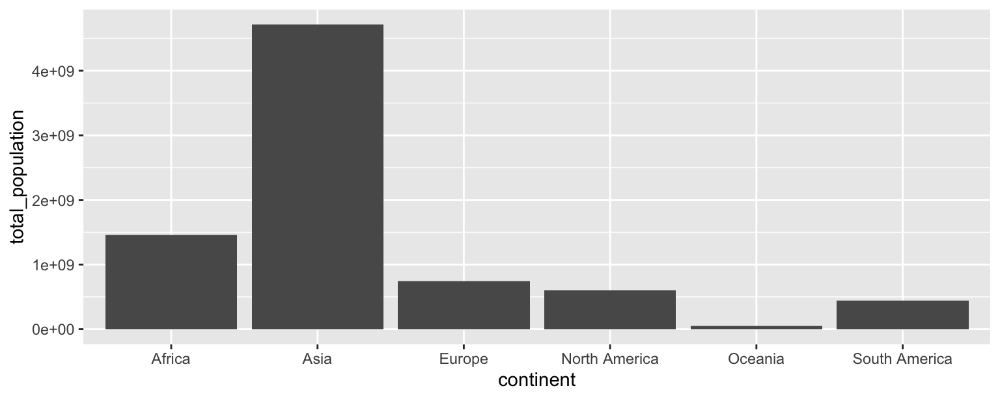
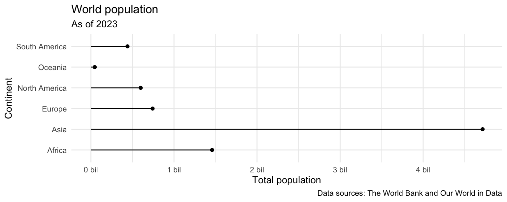

library(tidyverse)
library(scales)Continent populations (Complete)
Introduction
Our ultimate goal in this application exercise is to create a bar plot of total populations of continents, where the input data are:
- Countries and populations
- Countries and continents
Packages
We will use the tidyverse and scales packages for data wrangling and visualization.
Data
Population
These data come from The World Bank and reflect population counts for the years 2000 to 2023. The populations given are mid-year estimates.
population <- read_csv("https://data-science-with-r.github.io/data/population.csv")Let’s take a look at the data.
population# A tibble: 217 × 28
series_name series_code country_name country_code `2000` `2001` `2002` `2003`
<chr> <chr> <chr> <chr> <dbl> <dbl> <dbl> <dbl>
1 Population… SP.POP.TOTL Afghanistan AFG 1.95e7 1.97e7 2.10e7 2.26e7
2 Population… SP.POP.TOTL Albania ALB 3.09e6 3.06e6 3.05e6 3.04e6
3 Population… SP.POP.TOTL Algeria DZA 3.08e7 3.12e7 3.16e7 3.21e7
4 Population… SP.POP.TOTL American Sa… ASM 5.82e4 5.83e4 5.82e4 5.79e4
5 Population… SP.POP.TOTL Andorra AND 6.61e4 6.78e4 7.08e4 7.39e4
6 Population… SP.POP.TOTL Angola AGO 1.64e7 1.69e7 1.75e7 1.81e7
7 Population… SP.POP.TOTL Antigua and… ATG 7.51e4 7.62e4 7.72e4 7.81e4
8 Population… SP.POP.TOTL Argentina ARG 3.71e7 3.75e7 3.79e7 3.83e7
9 Population… SP.POP.TOTL Armenia ARM 3.17e6 3.13e6 3.11e6 3.08e6
10 Population… SP.POP.TOTL Aruba ABW 8.91e4 9.07e4 9.18e4 9.27e4
# ℹ 207 more rows
# ℹ 20 more variables: `2004` <dbl>, `2005` <dbl>, `2006` <dbl>, `2007` <dbl>,
# `2008` <dbl>, `2009` <dbl>, `2010` <dbl>, `2011` <dbl>, `2012` <dbl>,
# `2013` <dbl>, `2014` <dbl>, `2015` <dbl>, `2016` <dbl>, `2017` <dbl>,
# `2018` <dbl>, `2019` <dbl>, `2020` <dbl>, `2021` <dbl>, `2022` <dbl>,
# `2023` <dbl>Continents
These data come from Our World in Data.
continents <- read_csv("https://data-science-with-r.github.io/data/continents.csv")Let’s take a look at the data.
continents# A tibble: 285 × 4
entity code year continent
<chr> <chr> <dbl> <chr>
1 Abkhazia OWID_ABK 2015 Asia
2 Afghanistan AFG 2015 Asia
3 Akrotiri and Dhekelia OWID_AKD 2015 Asia
4 Aland Islands ALA 2015 Europe
5 Albania ALB 2015 Europe
6 Algeria DZA 2015 Africa
7 American Samoa ASM 2015 Oceania
8 Andorra AND 2015 Europe
9 Angola AGO 2015 Africa
10 Anguilla AIA 2015 North America
# ℹ 275 more rowsAnalysis
Data prep
- For this analysis we’ll focus on the latest available population numbers – 2023. Modify the
populationdata frame to only include 2023 population numbers. Then, rename the column containing 2023 population numbers aspopulation.
population <- population |>
select(series_name:country_code, `2023`) |>
rename(population = `2023`)- Which variable(s) will we use to join the
populationandcontinentsdata frames?
From population country_code
From continents code
- We want to create a new data frame that keeps all rows and columns from
populationand brings in the corresponding information fromcontinents. Which join function should we use?
left_join()
- Join the two data frames and name assign the joined data frame to a new data frame
population_continents.
population_continents <- population |>
left_join(continents |> select(code, continent), by = join_by(country_code == code))- Take a look at the newly created
population_continentdata frame. There are some countries that were not incontinents. First, identify which countries these are (they will haveNAvalues forcontinent).
population_continents |>
filter(is.na(continent))# A tibble: 2 × 6
series_name series_code country_name country_code population continent
<chr> <chr> <chr> <chr> <dbl> <chr>
1 Population, total SP.POP.TOTL Channel Islan… CHI 175346 <NA>
2 Population, total SP.POP.TOTL Kosovo XKX 1756374 <NA> Kosovo - OWID_KOS
Channel Islands - OWID_CIS
- All of these countries are actually in the
continentsdata frame, but under different names. So, let’s clean that data first by updating the country names in thepopulationdata frame in a way they will match thecontinentsdata frame, and then joining them, using acase_when()statement inmutate(). At the end, check that all countries now have continent information.
population_continents <- population |>
mutate(
country_code = case_when(
country_name == "Kosovo" ~ "OWID_KOS",
country_name == "Channel Islands" ~ "OWID_CIS",
.default = country_code
)
) |>
left_join(continents |> select(code, continent), by = join_by(country_code == code))
population_continents |>
filter(is.na(continent))# A tibble: 0 × 6
# ℹ 6 variables: series_name <chr>, series_code <chr>, country_name <chr>,
# country_code <chr>, population <dbl>, continent <chr>- Which continent do you think has the highest population? Which do you think has the second highest? The lowest?
Add response here.
- Create a new data frame called
population_summarythat contains a row for each continent and a column for the total population for that continent, in descending order of population. Note that the function for calculating totals in R issum().
population_summary <- population_continents |>
group_by(continent) |>
summarize(total_population = sum(population))Visualization
- Make a bar plot with total population on the y-axis and continent on the x-axis, where the height of each bar represents the total population in that continent.
ggplot(population_summary, aes(x = continent, y = total_population)) +
geom_col()
- Recreate the following plot, which is commonly referred to as a lollipop plot. Hint: Start with the
points, then try adding thesegments, then add axis labels andcaption, update the x scale.

ggplot(population_summary) +
geom_point(aes(y = continent, x = total_population)) +
geom_segment(
aes(
x = 0, xend = total_population,
y = continent, yend = continent)
) +
theme_minimal() +
labs(
x = "Total population",
y = "Continent",
title = "World population",
subtitle = "As of 2023",
caption = "Data sources: The World Bank and Our World in Data"
) +
scale_x_continuous(labels = label_number(scale = 1/1000000000, suffix = " bil"))
- What additional improvements would you like to make to this plot.
Add response here.